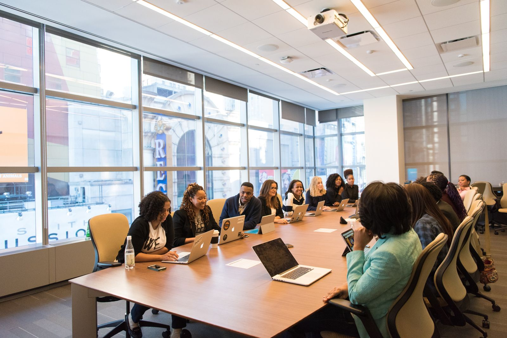
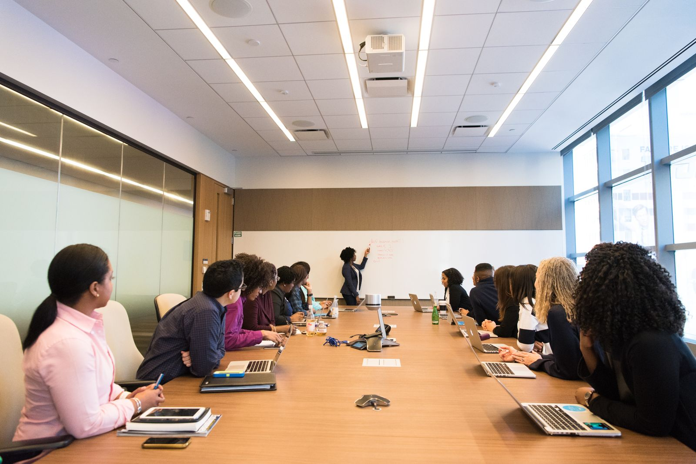
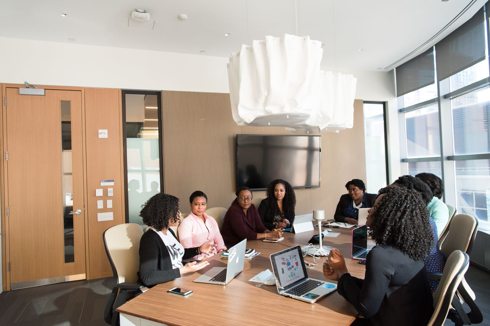
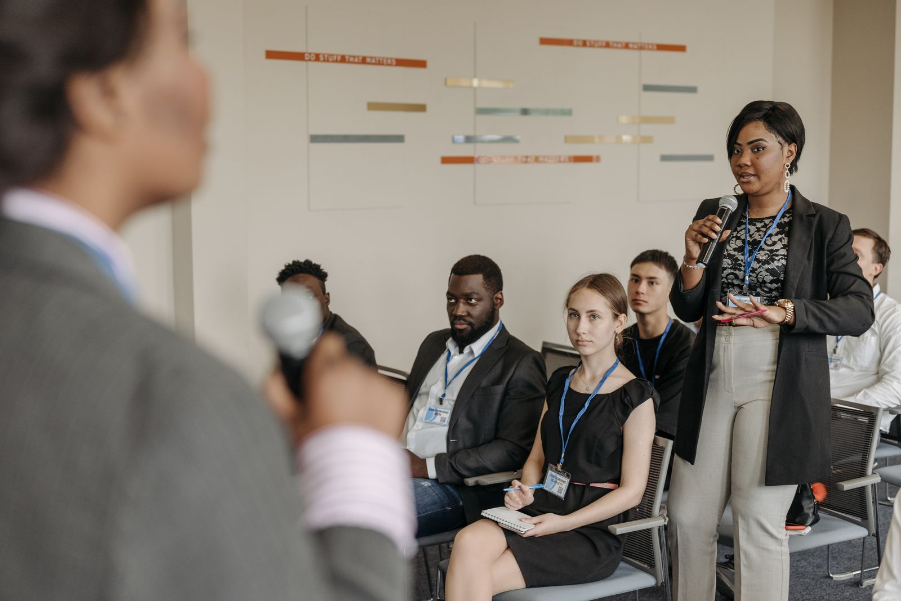

Honest moments. Beautifully remembered.
Stories held in light.
For the once-in-a-lifetime.
And all the little moments in between.

View The Caspian Business Forum THE CASPIAN BUSINESS FORUM — SUMMER, 2026A way of seeing
We photograph the moments
you will return to.
The hand on your shoulder. The room before the guests arrive. The look you didn’t know we saw. A thoughtful record of how it all felt.
Collected, not forgotten
A feeling.
In your hands.
Some photographs take you straight back. These are the ones we look for.
04 / A FEW THINGS WORTH KEEPING
Executive Strategy Meeting
Keep scrolling to unfold ↓
Different occasions. The same attention.

Some moments
last a second.We keep them
a little longer.
The in-between.
UNSCRIPTED. UNREPEATABLE.



Our philosophy
Not every moment
needs direction.
Some only
need attention.
We make room for a day to be itself. A little guidance when it helps. A quiet presence when the story is already happening.
Meet the studioFrom the editing table